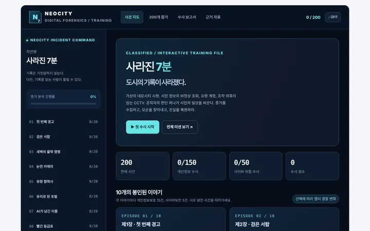
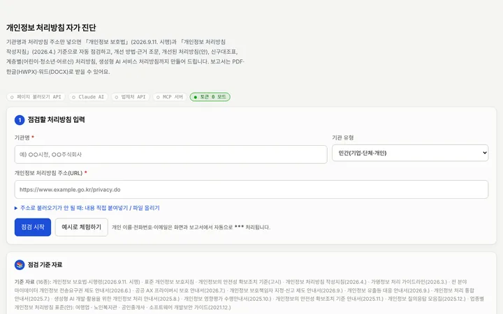
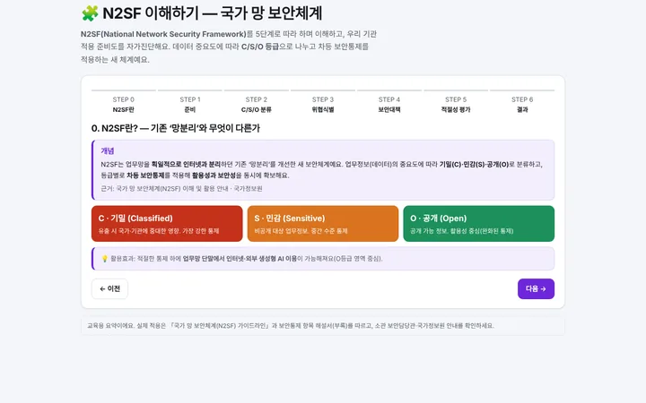
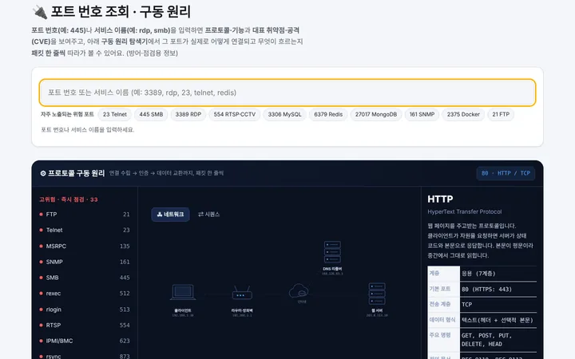
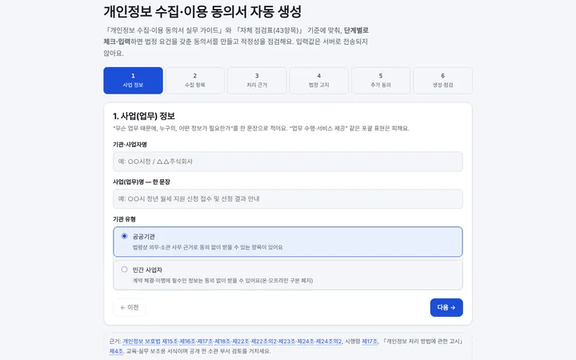

요망진 간세다리 · 정보보호 혼디지킴이

가상의 네오시티 시청에서 벌어진 200개 사건을 수사하며 배웁니다. 10개 챕터, 4가지 문제 방식, 분기 결말.
업무명·법령 제목으로 민감정보·고유식별정보 처리 근거 조문을 본문 전체까지 찾습니다.

처리방침을 38개 법정 항목으로 점검하고 개선안·신구대조표·계층별 방침을 만듭니다.

데이터를 C·S·O 등급으로 나눠 통제하는 새 체계를 5단계로 배우고 준비도를 진단합니다.

포트별 프로토콜·대표 CVE와 함께 패킷이 흐르는 과정을 애니메이션으로 따라갑니다.

항목·목적·보유기간을 고르면 법정 필수 고지사항을 갖춘 동의서를 만들어 드립니다.
법령과 안내서는 수시로 개정됩니다. 실제 적용 전에는 국가법령정보센터 현행본과 개인정보보호위원회 최신 안내를 함께 확인하세요. 이 누리집의 모든 점검·생성은 이용자의 브라우저 안에서만 이뤄지며 입력 내용은 서버에 저장되지 않습니다.